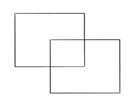
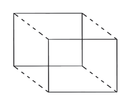
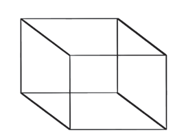
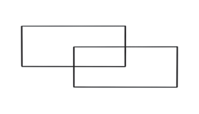
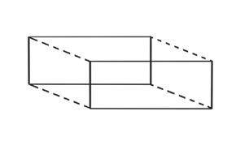
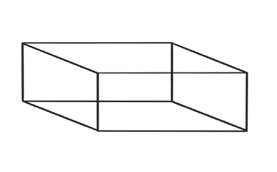

Kielelezo namba 4: Hatua za kuchora umbo la mche mraba
(iii) Kwa umbo la mche mstatili chora maumbo mawili ya mstatili yaliyoingiliana yenye ukubwa unaolingana ila moja likiwa juu kidogo ya lingine kama linavyoonekana katika hatua ya 1 katika Kielelezo namba 5; na
(iv) Yaunganishe maumbo hayo kwa kuchora mistari minne inayounganisha pembenne za umbo moja na pembenne za umbo lingine kama linavyoonekana katika hatua ya 2 na ya 3.



Kielelezo namba 5: Hatua za kuchora umbo la mche mstatili
Matumizi ya maumbo katika uchoraji wa picha mbalimbali
Katika sanaa ya uchoraji, maumbo huweza kutumika kuchora picha mbalimbali kwa mfano, picha za binadamu na wanyama.
Uchoraji wa picha ya binadamu
Katika kuchora picha ya binadamu, ni muhimu kwanza kuelewa uwiano wa viungo vyake ambavyo ni kichwa, mikono, kifua na miguu. Hivyo, unapaswa kufanya mazoezi ya kutosha kuchora picha ya binadamu kwa kuongozwa na ramani ya maumbo ambayo umejifunza.